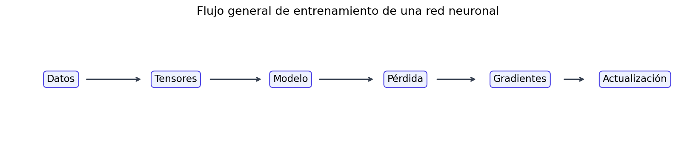
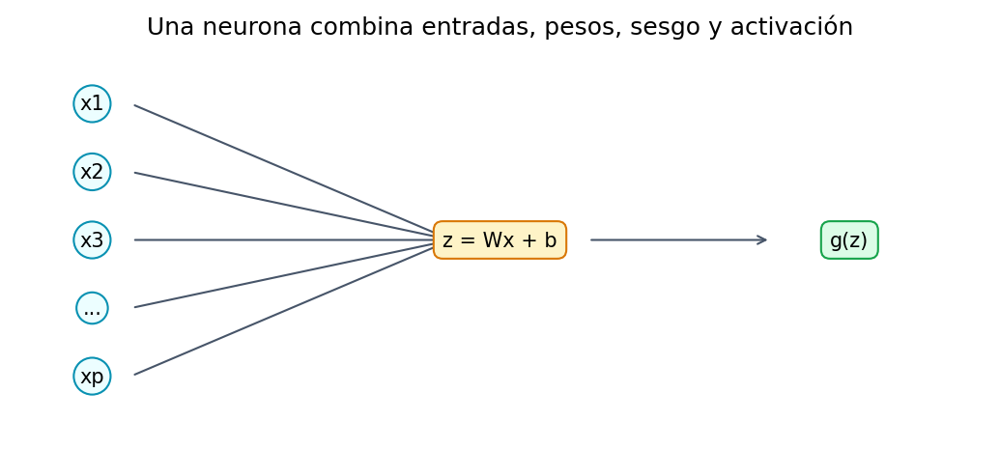
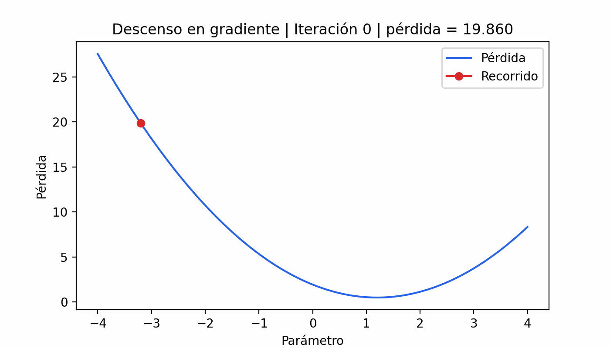

Capítulo 10 Introducción a Redes Neuronales
10.1 Idea General
Una red neuronal es un modelo supervisado que aprende una función a partir de ejemplos. Si tenemos variables de entrada \(X\) y una respuesta \(Y\), la red intenta construir una función que produzca una predicción \(\hat{Y}\):
\[X \rightarrow \hat{Y}\]
La idea es la misma que en otros modelos de machine learning:
- Hacer una predicción.
- Medir qué tan mala fue la predicción.
- Ajustar los parámetros.
- Repetir muchas veces.
La diferencia es que una red neuronal organiza sus parámetros en capas. Cada capa transforma la información y la pasa a la siguiente. En este capítulo veremos sólo redes neuronales densas, también llamadas fully connected networks. No veremos redes convolucionales ni secuenciales todavía; esas aparecerán al final como siguientes pasos.
from pathlib import Path
import joblib
import numpy as np
import pandas as pd
import plotly.express as px
import plotly.graph_objects as go
import torch
from sklearn.model_selection import train_test_split
from sklearn.preprocessing import StandardScaler
from torch import nn
from torch.utils.data import DataLoader, TensorDataset
from dsml_utils import (
load_ames,
preprocess_ames_frame,
regression_metrics,
tabular_preprocessor,
)
torch.manual_seed(4595)## <torch._C.Generator object at 0x3057b2bb0>np.random.seed(4595)
CACHE_VERSION = "v1"
RECALCULAR_CACHE = False
CACHE_DIR = Path("data/cache/07-redes-neuronales")
_plotly_javascript_included = False
def read_or_create_cache(filename, builder):
cache_path = CACHE_DIR / filename
if cache_path.exists() and not RECALCULAR_CACHE:
return joblib.load(cache_path)
result = builder()
CACHE_DIR.mkdir(parents=True, exist_ok=True)
joblib.dump(result, cache_path, compress=3)
return result
def interactive_html(figure):
global _plotly_javascript_included
figure.update_layout(
template="plotly_white",
margin=dict(l=45, r=25, t=55, b=45),
hovermode="closest",
)
include_javascript = True if not _plotly_javascript_included else False
_plotly_javascript_included = True
return figure.to_html(
full_html=False,
include_plotlyjs=include_javascript,
config={"displaylogo": False, "responsive": True},
)
Las gráficas de curvas y comparaciones de este capítulo son interactivas en la versión HTML del libro. El descenso en gradiente también se presenta como animación .gif, de modo que el movimiento permanezca visible en una lectura no interactiva.
10.1.1 Ejecución Ágil y Reproducible
Los ejemplos breves de tensores, capas, activaciones y pérdidas se ejecutan cada vez que se compila el capítulo. En cambio, los experimentos con miles de actualizaciones y la preparación completa de Ames tienen semilla fija y producen resultados estables: se conservan en archivos .pkl para que la compilación habitual sólo los lea.
El código de entrenamiento sigue visible y es completamente reproducible. Para volver a entrenar los modelos o reconstruir los experimentos, basta cambiar RECALCULAR_CACHE = True en el chunk inicial, compilar una vez y después regresarlo a False. Si se modifica una arquitectura de manera permanente, debe incrementarse CACHE_VERSION.
10.2 Preparación de Datos
Usaremos el conjunto de viviendas de Ames para predecir Sale_Price. El flujo será:
- Cargar datos.
- Separar entrenamiento, validación y prueba.
- Aplicar ingeniería de variables.
- Imputar, escalar y convertir variables categóricas a dummies.
- Escalar también la respuesta.
La validación es importante porque las redes neuronales pueden aprender demasiado bien el conjunto de entrenamiento. Necesitamos un conjunto intermedio para observar si el modelo generaliza.
def prepare_ames_data():
ames = load_ames()
ames_train_full, ames_test = train_test_split(ames, train_size=0.75, random_state=4595)
ames_train, ames_valid = train_test_split(ames_train_full, train_size=0.80, random_state=4595)
X_train_raw = preprocess_ames_frame(ames_train, keep_target=False)
X_valid_raw = preprocess_ames_frame(ames_valid, keep_target=False)
X_test_raw = preprocess_ames_frame(ames_test, keep_target=False)
y_train = ames_train["Sale_Price"]
y_valid = ames_valid["Sale_Price"]
y_test = ames_test["Sale_Price"]
preprocessor = tabular_preprocessor(scale_numeric=True)
X_train = preprocessor.fit_transform(X_train_raw).astype("float32")
X_valid = preprocessor.transform(X_valid_raw).astype("float32")
X_test = preprocessor.transform(X_test_raw).astype("float32")
target_scaler = StandardScaler()
y_train_scaled = target_scaler.fit_transform(y_train.to_frame()).astype("float32")
y_valid_scaled = target_scaler.transform(y_valid.to_frame()).astype("float32")
return {
"X_train": X_train,
"X_valid": X_valid,
"X_test": X_test,
"y_train": y_train,
"y_valid": y_valid,
"y_test": y_test,
"y_train_scaled": y_train_scaled,
"y_valid_scaled": y_valid_scaled,
"target_scaler": target_scaler,
}
ames_prepared = read_or_create_cache(
f"ames_preparado_{CACHE_VERSION}.pkl",
prepare_ames_data,
)
X_train = ames_prepared["X_train"]
X_valid = ames_prepared["X_valid"]
X_test = ames_prepared["X_test"]
y_train = ames_prepared["y_train"]
y_valid = ames_prepared["y_valid"]
y_test = ames_prepared["y_test"]
y_train_scaled = ames_prepared["y_train_scaled"]
y_valid_scaled = ames_prepared["y_valid_scaled"]
target_scaler = ames_prepared["target_scaler"]
pd.DataFrame(
{
"conjunto": ["entrenamiento", "validación", "prueba"],
"filas": [X_train.shape[0], X_valid.shape[0], X_test.shape[0]],
"columnas": [X_train.shape[1], X_valid.shape[1], X_test.shape[1]],
}
)## conjunto filas columnas
## 0 entrenamiento 1757 126
## 1 validación 440 126
## 2 prueba 733 126Escalar Sale_Price ayuda porque una red neuronal aprende con gradientes. Si la respuesta está en cientos de miles, las pérdidas y gradientes pueden ser muy grandes y el entrenamiento se vuelve menos estable.
10.3 De Regresión Lineal a Neurona
Una regresión lineal calcula:
\[\hat{y} = b + w_1x_1 + w_2x_2 + \dots + w_px_p\]
Una neurona hace casi lo mismo:
\[z = b + w_1x_1 + w_2x_2 + \dots + w_px_p\]
Después puede aplicar una función de activación:
\[a = g(z)\]
Si no usamos activación, una neurona se parece mucho a una regresión lineal. Si usamos activaciones no lineales y muchas neuronas, la red puede aprender relaciones más flexibles.

10.4 Tensores
PyTorch trabaja con tensores. Un tensor es parecido a un arreglo de numpy, pero puede:
- vivir en CPU o GPU;
- guardar tipo de dato, forma y dispositivo;
- participar en cálculo automático de gradientes.
ejemplo_tensor = torch.tensor([[1.0, 2.0], [3.0, 4.0]])
ejemplo_tensor, ejemplo_tensor.shape, ejemplo_tensor.dtype## (tensor([[1., 2.],
## [3., 4.]]), torch.Size([2, 2]), torch.float32)Convertimos los datos ya preprocesados a tensores:
X_train_tensor = torch.tensor(X_train, dtype=torch.float32)
y_train_tensor = torch.tensor(y_train_scaled, dtype=torch.float32)
X_valid_tensor = torch.tensor(X_valid, dtype=torch.float32)
y_valid_tensor = torch.tensor(y_valid_scaled, dtype=torch.float32)
X_test_tensor = torch.tensor(X_test, dtype=torch.float32)
X_train_tensor.shape, y_train_tensor.shape## (torch.Size([1757, 126]), torch.Size([1757, 1]))10.5 Datasets, Batches y DataLoaders
Una red neuronal no suele actualizar sus pesos con todo el conjunto de datos en cada paso. Es más común usar mini-batches, pequeños grupos de observaciones.
TensorDataset guarda pares (X, y). DataLoader toma esos pares y los entrega por lotes.
train_dataset = TensorDataset(X_train_tensor, y_train_tensor)
train_loader = DataLoader(train_dataset, batch_size=64, shuffle=True)
batch_X, batch_y = next(iter(train_loader))
batch_X.shape, batch_y.shape## (torch.Size([64, 126]), torch.Size([64, 1]))10.6 Capas Densas
Una capa densa se implementa con nn.Linear. Si una capa recibe 10 variables y produce 5 neuronas, aprende:
- una matriz de pesos de tamaño \(10 \times 5\);
- un sesgo por cada neurona de salida.
capa_demo = nn.Linear(in_features=10, out_features=5)
capa_demo.weight.shape, capa_demo.bias.shape## (torch.Size([5, 10]), torch.Size([5]))La capa recibe un tensor y produce otro:
entrada_demo = torch.randn(4, 10)
salida_demo = capa_demo(entrada_demo)
salida_demo.shape## torch.Size([4, 5])10.7 Parámetros Entrenables
Los parámetros entrenables son los valores que la red ajusta durante el entrenamiento. En una capa densa:
\[\text{parámetros} = (\text{entradas} \times \text{salidas}) + \text{salidas}\]
El primer término son los pesos y el segundo son los sesgos.
def count_parameters(model):
return sum(parameter.numel() for parameter in model.parameters() if parameter.requires_grad)
def parameter_table(model):
rows = []
for name, parameter in model.named_parameters():
rows.append(
{
"capa": name,
"forma": tuple(parameter.shape),
"parametros": parameter.numel(),
}
)
return pd.DataFrame(rows)n_features = X_train_tensor.shape[1]
linear_model = nn.Sequential(nn.Linear(n_features, 1))
parameter_table(linear_model)## capa forma parametros
## 0 0.weight (1, 126) 126
## 1 0.bias (1,) 1Una red con capas ocultas aprende más parámetros:
small_dense_model = nn.Sequential(
nn.Linear(n_features, 64),
nn.ReLU(),
nn.Linear(64, 32),
nn.ReLU(),
nn.Linear(32, 1),
)
small_parameter_summary = parameter_table(small_dense_model)
small_parameter_summary, count_parameters(small_dense_model)## ( capa forma parametros
## 0 0.weight (64, 126) 8064
## 1 0.bias (64,) 64
## 2 2.weight (32, 64) 2048
## 3 2.bias (32,) 32
## 4 4.weight (1, 32) 32
## 5 4.bias (1,) 1, 10241)Más parámetros pueden dar más flexibilidad, pero también aumentan el riesgo de sobreajuste.
## Figure({
## 'data': [{'alignmentgroup': 'True',
## 'hovertemplate': '<b>%{x}</b><br>Parámetros: %{y:,}<extra></extra>',
## 'legendgroup': '',
## 'marker': {'color': '#4f46e5', 'pattern': {'shape': ''}},
## 'name': '',
## 'offsetgroup': '',
## 'orientation': 'v',
## 'showlegend': False,
## 'text': array([8.064e+03, 6.400e+01, 2.048e+03, 3.200e+01, 3.200e+01, 1.000e+00]),
## 'textposition': 'auto',
## 'type': 'bar',
## 'x': array(['0.weight', '0.bias', '2.weight', '2.bias', '4.weight', '4.bias'],
## dtype=object),
## 'xaxis': 'x',
## 'y': array([8064, 64, 2048, 32, 32, 1]),
## 'yaxis': 'y'}],
## 'layout': {'barmode': 'relative',
## 'legend': {'tracegroupgap': 0},
## 'template': '...',
## 'title': {'text': 'Parámetros entrenables por tensor'},
## 'xaxis': {'anchor': 'y', 'domain': [0.0, 1.0], 'title': {'text': 'Tensor de pesos o sesgos'}},
## 'yaxis': {'anchor': 'x', 'domain': [0.0, 1.0], 'title': {'text': 'Número de parámetros'}}}
## })10.8 Funciones de Activación
Las activaciones permiten que la red aprenda relaciones no lineales. Sin activaciones, apilar muchas capas lineales sería equivalente a tener una sola transformación lineal.
Activaciones comunes:
- Lineal: no cambia el valor. Se usa en salidas de regresión.
- Sigmoid: comprime a valores entre 0 y 1. Útil para probabilidades binarias, aunque puede saturarse.
- Tanh: comprime entre -1 y 1. Centrada en cero, pero también puede saturarse.
- ReLU: deja pasar positivos y apaga negativos. Es simple, rápida y muy usada.
- Leaky ReLU: parecida a ReLU, pero deja pasar una pequeña pendiente negativa.
- ELU: suaviza la parte negativa y puede ayudar en algunas redes.
- GELU: activación suave usada en arquitecturas modernas.
- Softmax: convierte un vector en probabilidades que suman 1. Se usa en clasificación multiclase.
x = torch.linspace(-5, 5, 300)
activations = {
"lineal": x,
"sigmoid": torch.sigmoid(x),
"tanh": torch.tanh(x),
"relu": torch.relu(x),
"leaky_relu": torch.nn.functional.leaky_relu(x, negative_slope=0.1),
"elu": torch.nn.functional.elu(x),
"gelu": torch.nn.functional.gelu(x),
}
activation_df = pd.DataFrame(
{
"entrada": x.numpy(),
**{name: values.numpy() for name, values in activations.items()},
}
).melt(id_vars="entrada", var_name="activacion", value_name="salida")logits_demo = torch.tensor([1.2, 0.4, -0.8])
probabilidades = torch.softmax(logits_demo, dim=0)
pd.DataFrame(
{
"clase": ["A", "B", "C"],
"logit": logits_demo.numpy(),
"softmax": probabilidades.numpy(),
}
)## clase logit softmax
## 0 A 1.2 0.631049
## 1 B 0.4 0.283548
## 2 C -0.8 0.085403Para nuestro problema de Ames usamos salida lineal porque estamos resolviendo regresión: el precio puede tomar muchos valores continuos.
10.9 Arquitectura de una Red Densa
Una red densa para regresión tabular suele tener:
- una capa de entrada con tantas variables como columnas tenga
X; - una o más capas ocultas;
- activaciones en las capas ocultas;
- una salida de una neurona para predecir el valor continuo.
device = torch.device("cuda" if torch.cuda.is_available() else "cpu")
base_model = nn.Sequential(
nn.Linear(n_features, 64),
nn.ReLU(),
nn.Linear(64, 32),
nn.ReLU(),
nn.Linear(32, 1),
).to(device)
base_model## Sequential(
## (0): Linear(in_features=126, out_features=64, bias=True)
## (1): ReLU()
## (2): Linear(in_features=64, out_features=32, bias=True)
## (3): ReLU()
## (4): Linear(in_features=32, out_features=1, bias=True)
## )parameter_table(base_model)## capa forma parametros
## 0 0.weight (64, 126) 8064
## 1 0.bias (64,) 64
## 2 2.weight (32, 64) 2048
## 3 2.bias (32,) 32
## 4 4.weight (1, 32) 32
## 5 4.bias (1,) 110.10 Funciones de Pérdida
La función de pérdida responde: ¿qué tan mal estuvo mi predicción?
Para regresión:
- MSELoss: penaliza mucho los errores grandes. Es suave y común, pero sensible a outliers.
- L1Loss / MAE: mide error absoluto. Es más robusta a outliers, pero su gradiente es menos suave.
- HuberLoss / SmoothL1Loss: combina MSE para errores pequeños y MAE para errores grandes. Es una alternativa balanceada.
Para clasificación:
- BCEWithLogitsLoss: clasificación binaria. Recibe logits y aplica sigmoid internamente.
- CrossEntropyLoss: clasificación multiclase. Recibe logits y aplica softmax internamente.
residuals = torch.linspace(-4, 4, 300)
mse_curve = residuals**2
mae_curve = torch.abs(residuals)
huber_loss = nn.HuberLoss(delta=1.0, reduction="none")
huber_curve = huber_loss(residuals, torch.zeros_like(residuals))
loss_curve_df = pd.DataFrame(
{
"error": residuals.numpy(),
"MSE": mse_curve.numpy(),
"MAE": mae_curve.numpy(),
"Huber": huber_curve.numpy(),
}
).melt(id_vars="error", var_name="perdida", value_name="valor")Ejemplo de pérdidas en PyTorch:
y_real_demo = torch.tensor([[2.0], [4.0], [8.0]])
y_pred_demo = torch.tensor([[2.5], [3.0], [11.0]])
loss_examples = pd.DataFrame(
{
"loss": ["MSELoss", "L1Loss", "HuberLoss"],
"valor": [
nn.MSELoss()(y_pred_demo, y_real_demo).item(),
nn.L1Loss()(y_pred_demo, y_real_demo).item(),
nn.HuberLoss(delta=1.0)(y_pred_demo, y_real_demo).item(),
],
}
)
loss_examples## loss valor
## 0 MSELoss 3.416667
## 1 L1Loss 1.500000
## 2 HuberLoss 1.041667Ejemplo de pérdidas para clasificación:
binary_logits = torch.tensor([[1.2], [-0.7], [0.3]])
binary_target = torch.tensor([[1.0], [0.0], [1.0]])
multiclass_logits = torch.tensor([[2.0, 0.5, -1.0], [0.2, 1.5, 0.1]])
multiclass_target = torch.tensor([0, 1])
pd.DataFrame(
{
"problema": ["binario", "multiclase"],
"loss": ["BCEWithLogitsLoss", "CrossEntropyLoss"],
"valor": [
nn.BCEWithLogitsLoss()(binary_logits, binary_target).item(),
nn.CrossEntropyLoss()(multiclass_logits, multiclass_target).item(),
],
}
)## problema loss valor
## 0 binario BCEWithLogitsLoss 0.406941
## 1 multiclase CrossEntropyLoss 0.329724Para Ames usaremos MSELoss, porque queremos penalizar errores grandes de precio y estamos trabajando con la respuesta escalada.
loss_fn = nn.MSELoss()
loss_fn## MSELoss()10.11 Descenso en Gradiente
El descenso en gradiente busca parámetros que reduzcan la pérdida. La intuición es caminar cuesta abajo:
\[\theta_{nuevo} = \theta_{actual} - \eta \nabla L(\theta)\]
donde:
- \(\theta\) son los parámetros;
- \(\eta\) es la tasa de aprendizaje;
- \(\nabla L(\theta)\) es la dirección de mayor crecimiento de la pérdida.
Como queremos bajar, nos movemos en dirección contraria al gradiente.
En la animación siguiente, el punto parte de un parámetro con pérdida alta y actualiza su posición con el gradiente de la curva. La tasa de aprendizaje controla qué tan largo es cada paso. Como esta trayectoria es determinista, el GIF se conserva como imagen del capítulo; el código queda disponible para regenerarlo si se cambia el ejemplo.
import matplotlib.pyplot as plt
from matplotlib.animation import FuncAnimation, PillowWriter
gif_path = Path("img/10-nn/descenso-gradiente.gif")
gif_path.parent.mkdir(parents=True, exist_ok=True)
fig, ax = plt.subplots(figsize=(7, 4))
ax.plot(theta_grid, loss_grid, color="#2563eb", label="Pérdida")
path_line, = ax.plot([], [], "-o", color="#dc2626", label="Recorrido")
ax.set_xlabel("Parámetro")
ax.set_ylabel("Pérdida")
ax.legend(loc="upper right")
def update_gradient_frame(frame):
path_line.set_data(gd_path[: frame + 1], gd_loss[: frame + 1])
ax.set_title(f"Descenso en gradiente | Iteración {frame} | pérdida = {gd_loss[frame]:.3f}")
return (path_line,)
gradient_animation = FuncAnimation(
fig,
update_gradient_frame,
frames=len(gd_path),
interval=550,
repeat=True,
)
gradient_animation.save(gif_path, writer=PillowWriter(fps=2))
plt.close(fig)
10.11.1 Batch, Estocástico y Mini-Batch
Hay tres formas comunes de calcular gradientes:
- Batch gradient descent: usa todos los datos en cada actualización. Es estable, pero puede ser lento.
- Stochastic gradient descent: usa una observación por actualización. Es rápido por paso, pero muy ruidoso.
- Mini-batch gradient descent: usa grupos pequeños. Es el equilibrio más usado en redes neuronales.
def make_toy_regression(n=256):
rng = np.random.default_rng(4595)
x = rng.normal(size=(n, 1)).astype("float32")
y = (3.0 * x + 0.7 + rng.normal(scale=0.35, size=(n, 1))).astype("float32")
return torch.tensor(x), torch.tensor(y)
toy_X, toy_y = make_toy_regression()
def train_toy(batch_size, epochs=45, lr=0.05):
torch.manual_seed(4595)
dataset = TensorDataset(toy_X, toy_y)
loader = DataLoader(dataset, batch_size=batch_size, shuffle=True)
model = nn.Linear(1, 1)
optimizer = torch.optim.SGD(model.parameters(), lr=lr)
loss = nn.MSELoss()
history = []
for epoch in range(epochs):
batch_losses = []
for bx, by in loader:
pred = model(bx)
current_loss = loss(pred, by)
optimizer.zero_grad()
current_loss.backward()
optimizer.step()
batch_losses.append(current_loss.item())
history.append(np.mean(batch_losses))
return {
"batch_size": batch_size,
"w": model.weight.item(),
"b": model.bias.item(),
"loss": history[-1],
"history": history,
}
def compare_gradient_batches():
return {
"batch": train_toy(batch_size=len(toy_X)),
"estocástico": train_toy(batch_size=1),
"mini_batch": train_toy(batch_size=32),
}
gd_results = read_or_create_cache(
f"descenso_por_batches_{CACHE_VERSION}.pkl",
compare_gradient_batches,
)
pd.DataFrame(
[
{
"tipo": name,
"batch_size": result["batch_size"],
"w_aprendido": result["w"],
"b_aprendido": result["b"],
"loss_final": result["loss"],
}
for name, result in gd_results.items()
]
).round(4)## tipo batch_size w_aprendido b_aprendido loss_final
## 0 batch 256 2.9704 0.7104 0.1192
## 1 estocástico 1 3.0749 0.8519 0.1372
## 2 mini_batch 32 2.9953 0.7213 0.1188En redes neuronales casi siempre usamos mini-batches porque actualizan con frecuencia y reducen parte del ruido extremo del entrenamiento estocástico puro.
10.12 Optimizadores
El optimizador decide cómo actualizar los parámetros usando los gradientes. Todos buscan reducir la pérdida, pero no todos se mueven igual.
- SGD: descenso en gradiente simple. Es fácil de entender y puede generalizar bien, pero puede ser lento.
- SGD con momentum: acumula dirección de pasos anteriores. Ayuda a avanzar en direcciones consistentes y reduce oscilaciones.
- RMSprop: adapta el tamaño de paso por parámetro usando promedios de gradientes recientes.
- Adam: combina ideas de momentum y RMSprop. Es una opción práctica para iniciar.
- AdamW: variante de Adam con mejor manejo de
weight_decay; muy usada en redes modernas.
optimizer_examples = {
"SGD": torch.optim.SGD(base_model.parameters(), lr=0.01),
"SGD_momentum": torch.optim.SGD(base_model.parameters(), lr=0.01, momentum=0.9),
"RMSprop": torch.optim.RMSprop(base_model.parameters(), lr=0.001),
"Adam": torch.optim.Adam(base_model.parameters(), lr=0.001),
"AdamW": torch.optim.AdamW(base_model.parameters(), lr=0.001, weight_decay=1e-4),
}
list(optimizer_examples)Comparemos optimizadores en el ejemplo sencillo de una recta:
def train_toy_optimizer(optimizer_name, epochs=45):
torch.manual_seed(4595)
model = nn.Linear(1, 1)
loss = nn.MSELoss()
if optimizer_name == "SGD":
optimizer = torch.optim.SGD(model.parameters(), lr=0.03)
elif optimizer_name == "Momentum":
optimizer = torch.optim.SGD(model.parameters(), lr=0.03, momentum=0.9)
elif optimizer_name == "RMSprop":
optimizer = torch.optim.RMSprop(model.parameters(), lr=0.01)
elif optimizer_name == "Adam":
optimizer = torch.optim.Adam(model.parameters(), lr=0.03)
elif optimizer_name == "AdamW":
optimizer = torch.optim.AdamW(model.parameters(), lr=0.03, weight_decay=1e-3)
loader = DataLoader(TensorDataset(toy_X, toy_y), batch_size=32, shuffle=True)
history = []
for epoch in range(epochs):
losses = []
for bx, by in loader:
pred = model(bx)
current_loss = loss(pred, by)
optimizer.zero_grad()
current_loss.backward()
optimizer.step()
losses.append(current_loss.item())
history.append(np.mean(losses))
return history
def compare_optimizers():
return {
name: train_toy_optimizer(name)
for name in ["SGD", "Momentum", "RMSprop", "Adam", "AdamW"]
}
optimizer_histories = read_or_create_cache(
f"optimizadores_{CACHE_VERSION}.pkl",
compare_optimizers,
)En la práctica, Adam o AdamW suelen ser buenos puntos de partida. SGD con momentum puede ser competitivo, pero normalmente requiere más cuidado con la tasa de aprendizaje.
10.13 Entrenamiento de una Red Densa Base
Ahora entrenamos una red densa sobre Ames. Esta primera red no tiene técnicas explícitas de regularización.
def make_base_model(hidden_1=128, hidden_2=64):
return nn.Sequential(
nn.Linear(n_features, hidden_1),
nn.ReLU(),
nn.Linear(hidden_1, hidden_2),
nn.ReLU(),
nn.Linear(hidden_2, 1),
)
def train_model(model, optimizer, train_loader, X_valid_tensor, y_valid_tensor, epochs=80):
model = model.to(device)
history = []
for epoch in range(1, epochs + 1):
model.train()
train_losses = []
for batch_X, batch_y in train_loader:
batch_X = batch_X.to(device)
batch_y = batch_y.to(device)
predictions = model(batch_X)
loss = loss_fn(predictions, batch_y)
optimizer.zero_grad()
loss.backward()
optimizer.step()
train_losses.append(loss.item())
model.eval()
with torch.no_grad():
valid_predictions = model(X_valid_tensor.to(device))
valid_loss = loss_fn(valid_predictions, y_valid_tensor.to(device)).item()
history.append(
{
"epoch": epoch,
"train_loss": np.mean(train_losses),
"valid_loss": valid_loss,
}
)
return model, pd.DataFrame(history)base_train_loader = DataLoader(train_dataset, batch_size=64, shuffle=True)
def train_unregularized_experiment():
torch.manual_seed(4595)
model = make_base_model()
optimizer = torch.optim.Adam(model.parameters(), lr=0.001)
model, history = train_model(
model,
optimizer,
base_train_loader,
X_valid_tensor,
y_valid_tensor,
epochs=80,
)
return {
"n_features": n_features,
"state_dict": {name: value.detach().cpu() for name, value in model.state_dict().items()},
"history": history,
}
unregularized_result = read_or_create_cache(
f"red_sin_regularizacion_{CACHE_VERSION}.pkl",
train_unregularized_experiment,
)
if unregularized_result["n_features"] != n_features:
raise ValueError("La caché no corresponde a las variables actuales. Actualice CACHE_VERSION.")
unregularized_model = make_base_model().to(device)
unregularized_model.load_state_dict(unregularized_result["state_dict"])## <All keys matched successfully>unregularized_history = unregularized_result["history"]
unregularized_history.tail()## epoch train_loss valid_loss
## 75 76 0.002082 0.345390
## 76 77 0.001663 0.344058
## 77 78 0.001563 0.348479
## 78 79 0.001393 0.346144
## 79 80 0.001336 0.34773210.14 Regularización en Redes Neuronales
La regularización busca reducir sobreajuste. En redes neuronales densas, las técnicas más comunes son:
- Weight decay: penaliza pesos grandes. Es parecido a regularización L2.
- Dropout: apaga neuronas aleatoriamente durante entrenamiento para evitar dependencia excesiva.
- Batch normalization: estabiliza la distribución interna de activaciones.
- Early stopping: detiene entrenamiento cuando la pérdida de validación deja de mejorar.
- Reducir arquitectura: menos capas o menos neuronas también regulariza.
10.14.1 Weight Decay
En PyTorch se agrega desde el optimizador. Este fragmento muestra la configuración; su aplicación completa aparece en el entrenamiento regularizado posterior.
weight_decay_example_model = make_base_model()
weight_decay_optimizer = torch.optim.AdamW(
weight_decay_example_model.parameters(),
lr=0.001,
weight_decay=1e-4,
)
weight_decay_optimizer10.14.2 Dropout
nn.Dropout(p=0.2) apaga 20% de las activaciones durante entrenamiento. En evaluación se desactiva automáticamente con model.eval().
dropout_demo = nn.Dropout(p=0.5)
dropout_demo.train()## Dropout(p=0.5, inplace=False)dropout_demo(torch.ones(10))## tensor([2., 2., 0., 0., 0., 0., 2., 0., 2., 0.])10.14.3 Batch Normalization
nn.BatchNorm1d normaliza activaciones dentro de la red. Puede hacer el entrenamiento más estable, aunque no siempre mejora todos los problemas tabulares.
batch_norm_demo = nn.BatchNorm1d(num_features=4)
batch_norm_demo(torch.randn(5, 4))## tensor([[-0.4249, -0.1814, -1.7801, 1.4098],
## [ 0.8462, -1.2193, 1.2344, 0.9114],
## [ 1.2482, 1.8121, 0.5475, -0.8804],
## [-0.0759, -0.4421, 0.0604, -1.1498],
## [-1.5936, 0.0307, -0.0623, -0.2910]],
## grad_fn=<NativeBatchNormBackward0>)10.14.4 Early Stopping
Early stopping guarda el mejor modelo observado en validación y detiene el entrenamiento si deja de mejorar durante varias épocas.
def make_regularized_model(hidden_1=128, hidden_2=64, dropout=0.25):
return nn.Sequential(
nn.Linear(n_features, hidden_1),
nn.BatchNorm1d(hidden_1),
nn.ReLU(),
nn.Dropout(dropout),
nn.Linear(hidden_1, hidden_2),
nn.BatchNorm1d(hidden_2),
nn.ReLU(),
nn.Dropout(dropout),
nn.Linear(hidden_2, 1),
)
def train_model_early_stopping(
model,
optimizer,
train_loader,
X_valid_tensor,
y_valid_tensor,
epochs=120,
patience=12,
):
model = model.to(device)
best_state = None
best_valid_loss = np.inf
epochs_without_improvement = 0
history = []
for epoch in range(1, epochs + 1):
model.train()
train_losses = []
for batch_X, batch_y in train_loader:
batch_X = batch_X.to(device)
batch_y = batch_y.to(device)
predictions = model(batch_X)
loss = loss_fn(predictions, batch_y)
optimizer.zero_grad()
loss.backward()
optimizer.step()
train_losses.append(loss.item())
model.eval()
with torch.no_grad():
valid_predictions = model(X_valid_tensor.to(device))
valid_loss = loss_fn(valid_predictions, y_valid_tensor.to(device)).item()
history.append(
{
"epoch": epoch,
"train_loss": np.mean(train_losses),
"valid_loss": valid_loss,
}
)
if valid_loss < best_valid_loss:
best_valid_loss = valid_loss
best_state = {key: value.detach().cpu().clone() for key, value in model.state_dict().items()}
epochs_without_improvement = 0
else:
epochs_without_improvement += 1
if epochs_without_improvement >= patience:
break
model.load_state_dict(best_state)
return model, pd.DataFrame(history)def train_regularized_experiment():
torch.manual_seed(4595)
model = make_regularized_model(dropout=0.25)
optimizer = torch.optim.AdamW(
model.parameters(),
lr=0.001,
weight_decay=1e-4,
)
model, history = train_model_early_stopping(
model,
optimizer,
base_train_loader,
X_valid_tensor,
y_valid_tensor,
epochs=120,
patience=12,
)
return {
"n_features": n_features,
"state_dict": {name: value.detach().cpu() for name, value in model.state_dict().items()},
"history": history,
}
regularized_result = read_or_create_cache(
f"red_regularizada_{CACHE_VERSION}.pkl",
train_regularized_experiment,
)
if regularized_result["n_features"] != n_features:
raise ValueError("La caché no corresponde a las variables actuales. Actualice CACHE_VERSION.")
regularized_model = make_regularized_model(dropout=0.25).to(device)
regularized_model.load_state_dict(regularized_result["state_dict"])## <All keys matched successfully>regularized_history = regularized_result["history"]
regularized_history.tail()## epoch train_loss valid_loss
## 17 18 0.167354 0.270236
## 18 19 0.157353 0.267763
## 19 20 0.157183 0.260200
## 20 21 0.144358 0.261315
## 21 22 0.155271 0.26184310.15 Contraste: Sin Regularizar vs Regularizada
La red sin regularizar suele reducir rápido la pérdida de entrenamiento. La pregunta es si eso también se traduce en mejor validación.
Evaluemos ambas redes en prueba:
def predict_price(model, X_tensor):
model.eval()
with torch.no_grad():
predictions_scaled = model(X_tensor.to(device)).cpu().numpy()
return target_scaler.inverse_transform(predictions_scaled).ravel()
unregularized_pred = predict_price(unregularized_model, X_test_tensor)
regularized_pred = predict_price(regularized_model, X_test_tensor)
model_comparison = pd.concat(
[
regression_metrics(y_test, unregularized_pred).assign(modelo="sin_regularizacion"),
regression_metrics(y_test, regularized_pred).assign(modelo="regularizada"),
],
ignore_index=True,
)
model_comparison.pivot(index="metric", columns="modelo", values="estimate").round(2)## modelo regularizada sin_regularizacion
## metric
## ccc 0.85 0.82
## mae 22551.18 26403.08
## mape 0.09 0.11
## rmse 28270.33 33086.52
## rsq 0.74 0.65El objetivo no es que la red regularizada siempre gane en todos los conjuntos. El objetivo es mostrar la lógica: si una red aprende demasiado el entrenamiento, agregamos restricciones para mejorar su comportamiento en datos nuevos.
10.16 Qué Conviene Revisar al Entrenar
Al entrenar redes densas, conviene revisar:
- Escalas: variables y respuesta en rangos razonables.
- Arquitectura: número de capas y neuronas.
- Activación: ReLU o variantes suelen ser un buen inicio.
- Pérdida: depende del tipo de problema.
- Optimizador: Adam o AdamW suelen ser buenos puntos de partida.
- Learning rate: si es muy alto, la pérdida puede explotar; si es muy bajo, aprende lento.
- Batch size: controla ruido y costo por actualización.
- Regularización: dropout, weight decay, batch normalization y early stopping.
- Validación: mirar validación, no sólo entrenamiento.
10.17 Siguientes Pasos
En un curso completo de redes neuronales, después de redes densas se estudiarían:
- Redes convolucionales: útiles para imágenes, visión por computadora y datos con estructura espacial.
- Redes secuenciales y recurrentes: útiles para texto, series de tiempo y datos ordenados.
- Transformers: útiles en lenguaje natural, visión moderna y modelos generativos.
- Regularización avanzada: programación de tasa de aprendizaje, normalización, aumentación y búsqueda de hiperparámetros.
- Interpretabilidad: cómo entender qué aprende una red y cuándo confiar en ella.
Por ahora, lo más importante es reconocer que una red neuronal densa es otro modelo supervisado: recibe variables, aprende parámetros y produce predicciones. Lo especial está en que puede combinar muchas transformaciones para aprender relaciones flexibles.